HOROSCOPE BELLINE · STUDY NOTES
호로스코프벨린 카드
52장의 카드에 담긴 상징과 이야기를 만나보세요.
카드를 선택하면 그림 해설부터 실생활 적용까지 한 장씩 살펴볼 수 있습니다.
처음 만나는 호로스코프벨린
학습 가이드 ↗학습 순서, 7행성의 의미와 카드 조합을 함께 알아보세요.
52장의 카드
52장 카드 도감
THE CARD COLLECTION검색 결과가 없어요.
검색어나 극성 선택을 바꾸어 보세요.


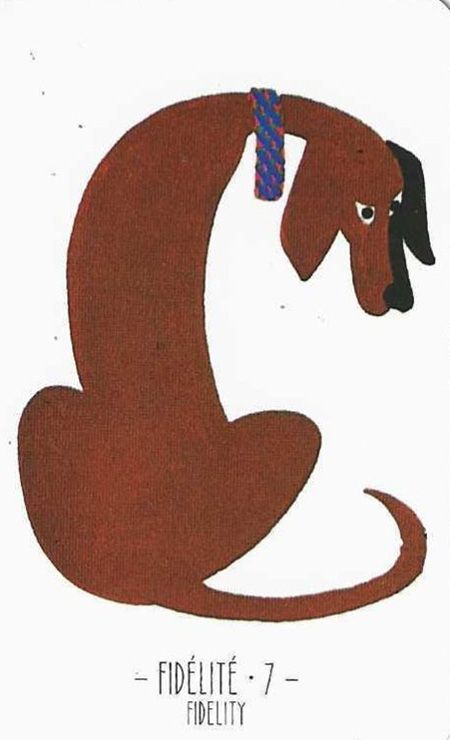


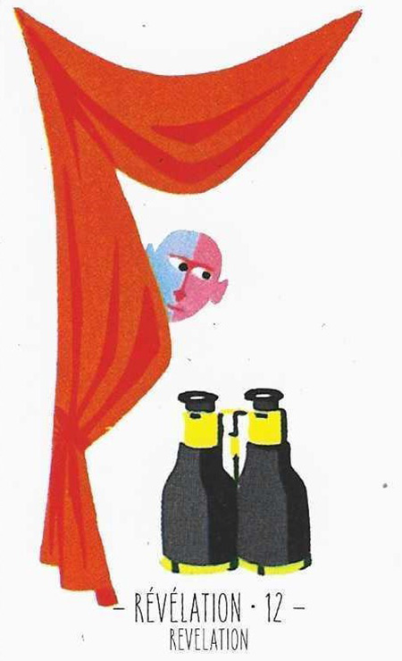


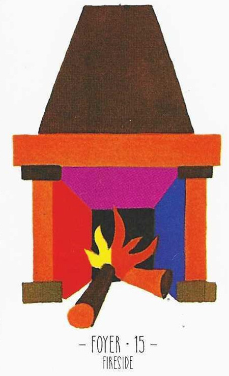

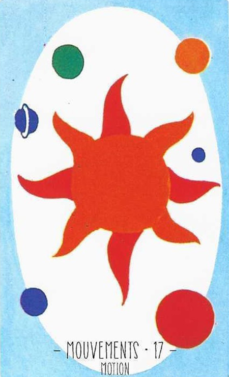


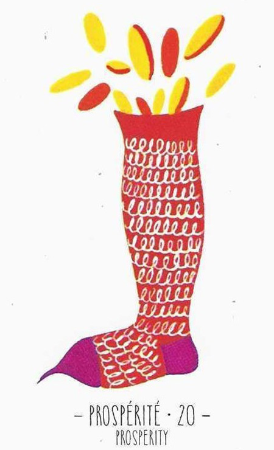

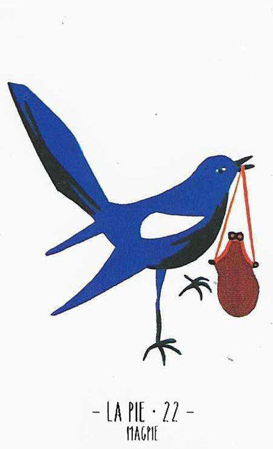
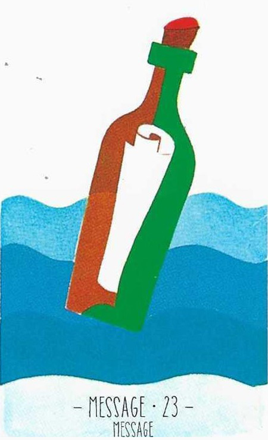


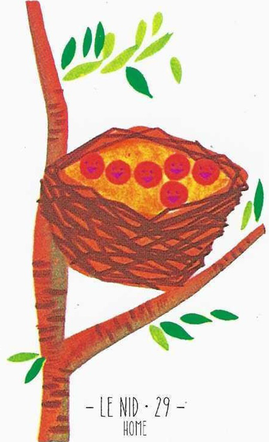
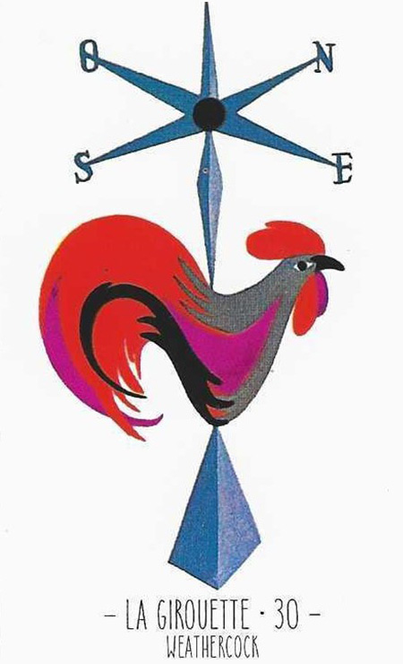


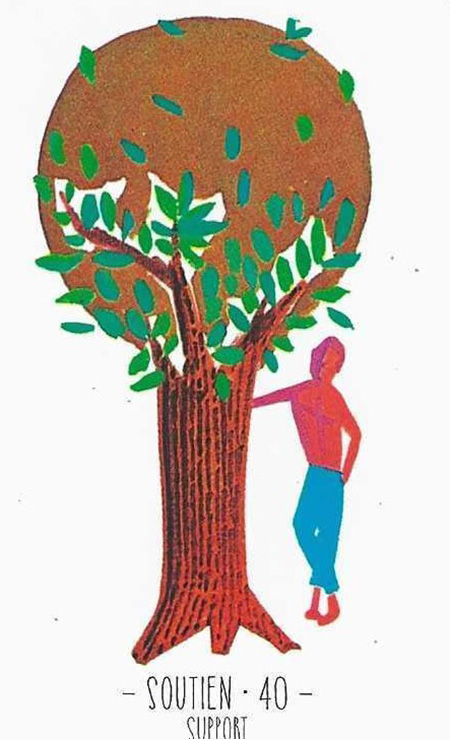


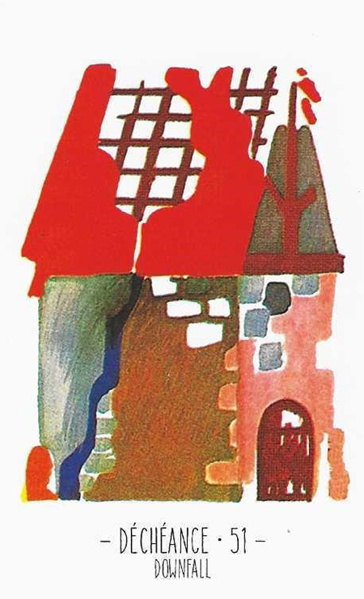